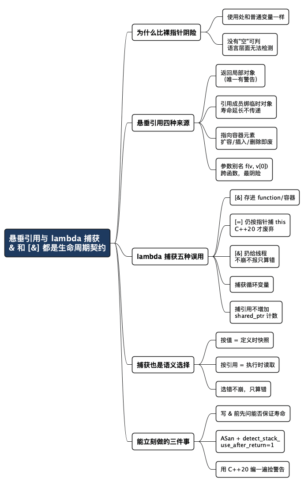

C++ 悬垂引用与 lambda 捕获：语法上最省事，出事时最难查
Posted on 六 05 9月 2026 in Tech
| Abstract | C++ 悬垂引用与 lambda 捕获的陷阱与实践 |
|---|---|
| Authors | Walter Fan |
| Category | Tech |
| Status | v1.0 |
| Updated | 2026-09-05 |
| License | CC-BY-NC-ND 4.0 |
大纲
展开看看
- 核心结论：引用和 lambda 捕获的危险不在于难懂，而在于语法太省事——写起来只有一两个字符，却是在声明一份生命周期契约；而违约之后，代码在使用处看不出任何异样。
- 为什么引用比裸指针更阴险：使用处和普通变量一模一样，且没有"空"这个状态可判——一个悬垂引用在语言层面无法被检测。
- 悬垂引用的四种来源：返回局部对象（唯一有警告的）、引用成员绑临时对象（寿命延长不传递）、指向容器元素（扩容即废）、参数别名（
f(v, v[0])，我认为最阴险）。 - 一个 ASan 默认关掉的开关：
detect_stack_use_after_return默认是关的，不开的话 lambda 悬垂只打印乱码，不报错。 - lambda 捕获的五种误用：
[&]存起来、[=]其实按指针捕this（C++17 无警告，C++20 才废弃）、扔给线程、捕获循环变量、捕引用当成"有shared_ptr就安全"。 - 一个真实调试现象：同一个悬垂 bug，因为程序里另一段"毫不相干"的代码持有
shared_ptr，ASan 就是不报——删掉那段才现形。 - 捕获还是个语义选择：
by_val看到 1，by_ref看到 42。选错了不崩，只算错。 - 该用/不该用引用：两份对照清单，加一张 lambda 捕获速查表和检查清单。
先看一行代码，你在 code review 里能看出问题吗？
add_bonus(v, v[0]);
我不一定能。两个参数都是有效对象，函数签名也人畜无害。但如果 add_bonus 内部往 v 里加了一个元素，v 扩容、元素搬家，那个 v[0] 的引用当场失效——编译器一句警告都没有，程序也可能不崩，就是算错。
C++ 里有两个语法特别省事：引用（T&、const T&）和 lambda 捕获（[&]、[=]）。省事到什么程度？加一个 &，或者在方括号里写两个字符。但这一两个字符，实际上是在声明一份生命周期契约：我保证被引用的那个对象，在我用它的时候还活着。
问题在于，契约写得这么短，人就不当回事；而一旦违约，代码在使用处看不出任何异样。
裸指针至少长得像个指针，看到
p->foo()你会警觉一下"p 还有效吗"。 引用在使用处和普通变量一模一样——who.name看不出who是别人家的对象，还是一块已经被释放的内存。
还有一层：引用没有"空"这个状态。指针可以 if (p) 判一下，引用没有对应的检查手段——一个悬垂引用在语言层面无法被检测，你连"它还活着吗"都问不出口。
下面的例子都在 Apple clang 21 上真跑过，输出是贴上来的实测结果。
ASan（AddressSanitizer，-fsanitize=address）在生成的代码里插入检查，让 use-after-free、越界这类错误在出错那一刻就崩掉并打印现场，而不是悄悄给个错值；UBSan（-fsanitize=undefined）管整数溢出、空指针解引用这类未定义行为。两个都只在测试环境开。
悬垂引用 (dangling reference) 的四种典型来源
按"编译器能帮你多少"从多到少排。
第一种：返回局部对象的引用
最经典，也是唯一编译器基本能拦住的：
const std::string& bad_return() {
std::string local = "local-string-...";
return local; // 函数一返回，local 就没了
}
warning: reference to stack memory associated with local variable
'local' returned [-Wreturn-stack-address]
跑起来 ASan 直接报 heap-use-after-free，调用栈里还能看到 ~basic_string 是在 bad_return() 里调用的。
这种能被警告抓住，是运气好。下面三种就没这么幸运了。
第二种：引用成员绑到临时对象
这里藏着一个连老手都容易记错的规则，我实测对比了一下：
std::string make() { return "a-temporary-string-..."; }
// A. 绑到局部 const 引用 —— 合法！临时对象的寿命被延长
const std::string& ok = make();
// B. 绑到引用成员 —— 悬垂！寿命不延长
struct Holder {
const std::string& ref;
explicit Holder(const std::string& s) : ref(s) {}
};
Holder h{make()};
A 干干净净，ASan + UBSan 全开都没话说：
[a-temporary-string-long-enough-for-heap] len=39 <- 完全合法，没有任何报错
B 则是：
ERROR: AddressSanitizer: stack-use-after-scope
#4 ... in main ref2.cpp:14
同样是 const& 绑一个临时对象，当局部变量安全，当成员就悬垂。
差别在于"生命周期延长"（lifetime extension）这条规则只对局部 const 引用生效，而且只延长一次——它不会顺着构造函数的参数传递下去。构造函数里那个 s 参数确实延长到了构造函数结束，然后就结束了，ref 从此指向坟墓。这一整段 -Wall -Wextra 不给任何警告。
引用成员还有个副作用：它会让整个类不可赋值。
error: object of type 'Bad' cannot be assigned because its copy
assignment operator is implicitly deleted
note: copy assignment operator of 'Bad' is implicitly deleted
because field 'r' is of reference type 'std::string &'
引用一旦绑定就不能改指向，所以编译器直接把赋值运算符删了。你的类从此进不了 vector、不能 sort、不能重新赋值——这通常不是你想要的。
第三种：指向容器元素的引用，容器一动就废
std::vector<std::string> v{"alpha","beta"};
std::string& first = v[0];
v.push_back("gamma"); // 扩容，元素整体搬家
std::printf("[%s]\n", first.c_str());
编译期无警告，ASan 报 heap-use-after-free。
记住这份名单：push_back、insert、erase、resize、reserve 都可能让已有的引用、指针、迭代器全部失效。
第四种：参数别名——我认为最阴险的一种
就是开头那个例子，展开看：
void add_bonus(std::vector<Account>& v, const Account& who) {
v.push_back(Account{"audit-log-entry", 0}); // 扩容 → who 失效
std::printf("who.name = [%s]\n", who.name.c_str());
}
add_bonus(v, v[0]); // ← 调用点看起来天经地义
两个参数其实指向同一块内存（这叫 aliasing，别名）。函数内部往 v 里加了个元素，who 当场失效。编译期无警告，ASan 报 heap-use-after-free。
这类 bug 的特点是跨函数边界：add_bonus 单独看没错（谁知道 who 来自 v），调用点单独看也没错（传的都是有效对象）。错在两者的假设撞上了，而这个假设不在任何一方的签名里。
寿命假设一旦跑到类型系统之外，就没人替你检查了。
ASan 有个默认关掉的开关
lambda 按引用捕获局部变量，是引用悬垂的高发地：
std::function<void()> make_task() {
std::string msg = "task-message-...";
return [&]{ std::printf("[%s]\n", msg.c_str()); }; // 按引用捕获
}
auto f = make_task();
f(); // msg 早没了
开着 ASan 跑，它不报错，只打出一串乱码：
[!�n] ← 开着 ASan，但没有报错，只有垃圾数据
原因是 ASan 的"栈上对象返回后被使用"检测默认是关的，得显式打开：
$ ASAN_OPTIONS=detect_stack_use_after_return=1 ./lam
ERROR: AddressSanitizer: stack-use-after-return
#4 ... in make_task()::$_0::operator()() const lam.cpp:6
把这个选项写进 CI 的 ASAN_OPTIONS。 不开 ASan 编译时，这段代码打印的是空字符串——不崩、不报、安静地输出错误结果，这正是未定义行为（UB）最讨人厌的形态。
lambda 捕获的五种误用
lambda 是引用误用的重灾区，因为它把"什么时候读这个变量"和"在哪里写这段代码"分开了——你在 A 处写下捕获，在 B 处才真正执行，而 A 和 B 之间那个对象可能已经没了。
误用一：[&] 捕获后把 lambda 存起来
就是上面那个例子。判断标准很简单：这个 lambda 会活过当前作用域吗？ 会（存进 std::function、容器、成员变量）就不能用 [&]。
误用二：[=] 以为"全都按值拷了"，其实 this 是按指针捕的
这个坑最隐蔽，因为写法看起来最"安全"：
struct Service {
std::string name = "service-name-...";
std::function<void()> make_callback() {
return [=]{ std::printf("[%s]\n", name.c_str()); }; // 看着像"全部按值拷"
}
};
std::function<void()> cb;
{ Service s; cb = s.make_callback(); } // s 已经销毁
cb();
[=] 给人的暗示是"该拷的都拷了"，但成员变量 name 并不是被直接拷走的——lambda 捕获的是 this 指针，name 每次都通过 this->name 去访问。对象一死，this 就是野指针：
ERROR: AddressSanitizer: stack-use-after-scope
#4 ... in Service::make_callback()::'lambda'()::operator()() const
C++17 下 -Wall -Wextra 一句警告都没有。好消息是这个写法在 C++20 里被明确废弃了，换标准就能收到提醒：
warning: implicit capture of 'this' with a capture default of '='
is deprecated [-Wdeprecated-this-capture]
note: add an explicit capture of 'this' to capture '*this' by reference
三种修法我都跑通了，按场景挑：
// A. 把整个对象拷进闭包（C++17 起）
return [*this]{ std::printf("[%s]\n", name.c_str()); };
// B. 只拷需要的那个成员（最省，推荐优先考虑）
return [n = name]{ std::printf("[%s]\n", n.c_str()); };
// C. 延长自身寿命（前提：对象由 shared_ptr 管理）
return [self = shared_from_this()]{ std::printf("[%s]\n", self->name.c_str()); };
A [*this]: [service-name-long-enough-to-be-on-the-heap]
B [n = name]: [service-name-long-enough-to-be-on-the-heap]
C shared_from_this: [service-name-long-enough-to-be-on-the-heap]
A 和 B 在 C++20 下也都是干净的，没有那条 deprecated 警告。
误用三：[&] 捕获后扔给线程
后果比前面都严重，因为它还叠加了时序不确定：
void spawn() {
std::string msg = "message-owned-by-spawn-frame-...";
std::thread t([&]{
std::this_thread::sleep_for(50ms);
std::printf("[%s]\n", msg.c_str()); // spawn 早返回了
});
t.detach(); // 不 join，spawn 立刻返回
}
不开 ASan 跑三遍，稳定输出空字符串——不崩、不报、结果错：
[]
[]
[]
开了 ASan 才现形（stack-use-after-return，注意报在 thread T1）。
规矩：往线程、线程池、异步任务里传的 lambda，一律按值捕获或捕 shared_ptr；要按引用捕，就必须 join() 保证不越过作用域。
误用四：捕获循环变量的引用
range-for 的循环变量本身就是引用，[&] 把这个引用又捕了一层：
std::vector<std::function<void()>> tasks;
std::vector<std::string> names{"alpha","beta","gamma"};
for (const auto& n : names)
tasks.push_back([&]{ std::printf("[%s] ", n.c_str()); }); // 捕获循环变量
names.push_back("delta"); // 扩容，元素搬家
for (auto& t : tasks) t();
两层问题叠加：循环变量 n 出了循环体就不在了，names 扩容又让元素整体搬家。实测 heap-use-after-free，编译期无警告。
修法：[n] 按值捕，或 [n = n] 明确拷一份。
误用五：捕了引用，却以为"对象有 shared_ptr 管着就没事"
{
auto tmp = std::make_shared<std::string>("temp-payload-...");
const std::string& r = *tmp; // 引用指向 shared_ptr 管的对象
bad = [&r]{ std::printf("[%s]\n", r.c_str()); }; // 只捕引用，不持有
} // tmp 计数归零 → 对象销毁 → r 悬垂
bad();
捕引用不增加引用计数。 shared_ptr 只在有人持有它时才保对象不死，而这个 lambda 捕的是解引用之后的引用，一份所有权都没拿。实测 heap-use-after-free。
要延长寿命就得捕 shared_ptr 本身（[tmp]），而不是捕 *tmp 的引用。
这个 bug 还有个更难缠的版本。把 bad 和一个捕了 shared_ptr 的 good 放进同一个程序，bad 会打印出正确内容，ASan 也不报错——因为 good 持有的那份所有权让内存一直活着。删掉 good，错误立刻现形。
这就是内存错误最气人的地方：它的表现取决于程序里别的、看起来毫不相干的代码。 你删了一行"无关"代码，bug 出现了；你加了一行日志，bug 消失了。查这种问题查到半夜，靠猜是不行的，得靠工具。
捕获方式还是个语义选择
上面全在讲生命周期，但捕获方式还决定读到的是什么时候的值——这是另一类 bug，不崩，但结果错：
int n = 1;
auto by_val = [=]{ std::printf("by_val 看到 n = %d\n", n); }; // 捕获时定格
auto by_ref = [&]{ std::printf("by_ref 看到 n = %d\n", n); }; // 执行时才读
n = 42;
by_val();
by_ref();
by_val 看到 n = 1
by_ref 看到 n = 42
同一个 n，同一个执行时刻，两个答案。 按值捕获是在定义 lambda 那一刻拍了张快照；按引用捕获是到执行那一刻才去读。
所以不能简单地说"按值捕获更安全，那就一律按值"——它俩语义不同，选错了不会崩，只会算错。而算错的 bug，通常比崩溃更难查。
lambda 捕获速查
| 场景 | 怎么捕 | 理由 |
|---|---|---|
就地执行（sort 比较器、for_each、算法回调） |
[&] |
最快，不拷贝；lambda 活不过当前语句 |
存进 std::function / 容器 / 成员 |
[x]、[x = ...] |
lambda 会活过当前作用域 |
| 扔给线程 / 线程池 / 异步任务 | 按值，或 [self = shared_from_this()] |
执行时机完全不可控 |
| 类成员函数里返回 lambda | [n = name] 优先，或 [*this] |
[=] 只捕 this 指针，对象一死就悬垂 |
| 需要对象活到 lambda 执行完 | [p = shared_ptr] |
捕引用不增加引用计数 |
| 需要"执行时的最新值" | [&] 且保证寿命 |
按值捕获是定义时的快照 |
一句话：
[&]的意思不是"高效捕获"，而是"我保证这个 lambda 死在被捕对象之前"。 保证不了，就别写[&]。
什么时候该用引用
说了这么多陷阱，别把引用一脚踢开——它在正确的场景里是最好的选择，性能白拿。
引用的正确定位是：在一次函数调用的时间窗口内，临时借用一个由别人保管、且调用期间肯定活着的对象。
-
函数参数，只读且对象较大 →
const T&。省掉一次拷贝，实测很直观：console 传值： 1000 次分配 传 const&： 0 次分配小对象（
int、double、指针、string_view这类）例外，直接传值更快。 -
函数参数，需要修改调用方的对象 →
T&。比传指针好，因为不用判空、不用担心调用方传nullptr。 - range-for 遍历容器 →
for (auto& x : v)改元素，for (const auto& x : v)只读。这是引用最安全的场景，因为循环体内通常不动容器结构（动了就回到第三种悬垂）。 - 返回类成员的引用 → 可以，但要清楚这是把成员的寿命绑给了调用方，前提是对象本身还活着（
v[0]、map::at()都是这么干的）。
什么时候不要用引用
- 不要返回局部对象的引用。 返回值就好，有 move 语义和返回值优化兜底，不慢。
- 不要用引用做类成员，除非你能证明被引用对象一定活得比这个类久。默认改用值、
unique_ptr、shared_ptr，实在要弱引用就用weak_ptr或裸指针（裸指针至少能判空、能重新赋值）。别忘了引用成员还会让类不可赋值。 - 不要在会存起来、会延后执行的地方按引用捕获。
[&]只适合"就地用完"的场景，而且别忘了[=]在成员函数里同样是按指针捕this。 - 不要跨线程传引用，除非有明确的同步和生命周期保证。对方线程什么时候用它，你不知道。
- 不要在持有引用期间修改容器结构。 要么先
reserve，要么改用下标，要么用指针稳定的容器。 - 不要用引用表达"可有可无"。 引用不能为空，硬要表达"可能没有"就该用指针、
std::optional，别去构造一个假对象。
一句话记法：
引用是"借"，不是"存"。 借的东西用完就还——放进成员、放进容器、放进 lambda、放进另一个线程，都不叫用完。
检查清单
拿去贴进 code review 模板：
- [ ] 有没有引用/
const&成员？ 被引用的对象一定活得比这个类久吗？（顺便：这个类还需要可赋值吗？） - [ ] 有没有返回引用？ 指向的是成员（可以）还是局部对象（不行）？
- [ ] 函数签名里有没有可能传进同一个对象的两个参数（别名）？ 函数内部改动其中一个吗？
- [ ] 拿了容器元素的引用/指针/迭代器之后，中间有没有可能
push_back/insert/erase/resize/reserve？ - [ ] lambda 里的
[&]，这个 lambda 会被存起来或延后执行吗？（存进std::function、容器、成员、线程池都算） - [ ] 成员函数里的
[=]或[this]，对象保证活到 lambda 执行完吗？ 能不能换成[n = name]/[*this]/[self = shared_from_this()]？ - [ ] 想靠
shared_ptr保命的 lambda，捕的是sp本身还是*sp的引用？（捕引用不增加计数） - [ ] 捕获方式选对了吗——要的是"定义时的快照"还是"执行时的最新值"？
- [ ] CI 里跑了 ASan/UBSan 吗？
ASAN_OPTIONS里加了detect_stack_use_after_return=1吗？ - [ ] 有条件的话，试着用 C++20 编一遍——
-Wdeprecated-this-capture能白捡几个[=]的坑。
总结：& 和 [&] 都是在签生命周期契约
上面九个例子，只有一个（返回局部对象）被编译器警告拦住，其余八个在 -Wall -Wextra 下一片安静。这不是编译器不努力，而是这类信息天生跨函数、跨作用域：add_bonus 不知道 who 来自 v，make_callback 不知道 Service s 什么时候销毁。寿命假设一旦离开类型系统，就只能靠人和工具。
所以落到三条能立刻做的事：
- 写
&或[&]之前，问一句"我能保证它活到我用完吗"。 保证不了就换成值、unique_ptr、shared_ptr，或者[n = name]。 - 把 ASan 和
detect_stack_use_after_return=1塞进 CI。 上面那些"不崩不报只输出乱码"的例子，全靠它才现形。 - 有条件就用 C++20 编一遍，白捡
-Wdeprecated-this-capture这类警告。
C++ 三十年一直在把这类纪律往类型系统里搬——从 malloc 到 unique_ptr 到 pmr，我在 《C/C++ 内存管理方法的变迁》 里梳过这条线。引用和 lambda 捕获，是这条线上还没搬完的那一段。
工具一年比一年强，但"这个对象该活多久"这个问题，三十年来一天也没被替代过。
全文思维导图
@startmindmap
<style>
mindmapDiagram {
node {
BackgroundColor #F8F9FA
RoundCorner 10
Padding 10
FontSize 13
}
:depth(0) {
BackgroundColor #1E3A5F
FontColor white
FontSize 18
FontStyle bold
}
:depth(1) {
FontSize 15
FontStyle bold
}
:depth(2) {
FontSize 13
}
}
</style>
* 悬垂引用与 lambda 捕获\n& 和 [&] 都是生命周期契约
** 为什么比裸指针阴险
*** 使用处和普通变量一样
*** 没有"空"可判\n语言层面无法检测
** 悬垂引用四种来源
*** 返回局部对象\n（唯一有警告）
*** 引用成员绑临时对象\n寿命延长不传递
*** 指向容器元素\n扩容/插入/删除即废
*** 参数别名 f(v, v[0])\n跨函数，最阴险
** lambda 捕获五种误用
*** [&] 存进 function/容器
*** [=] 仍按指针捕 this\nC++20 才废弃
*** [&] 扔给线程\n不崩不报只算错
*** 捕获循环变量
*** 捕引用不增加\nshared_ptr 计数
** 捕获也是语义选择
*** 按值 = 定义时快照
*** 按引用 = 执行时读取
*** 选错不崩，只算错
** 能立刻做的三件事
*** 写 & 前先问能否保证寿命
*** ASan + detect_stack_\nuse_after_return=1
*** 用 C++20 编一遍捡警告
@endmindmap

本作品采用知识共享署名-非商业性使用-禁止演绎 4.0 国际许可协议进行许可。 欢迎在我的个人网站 https://www.fanyamin.com 访问原文并评论。